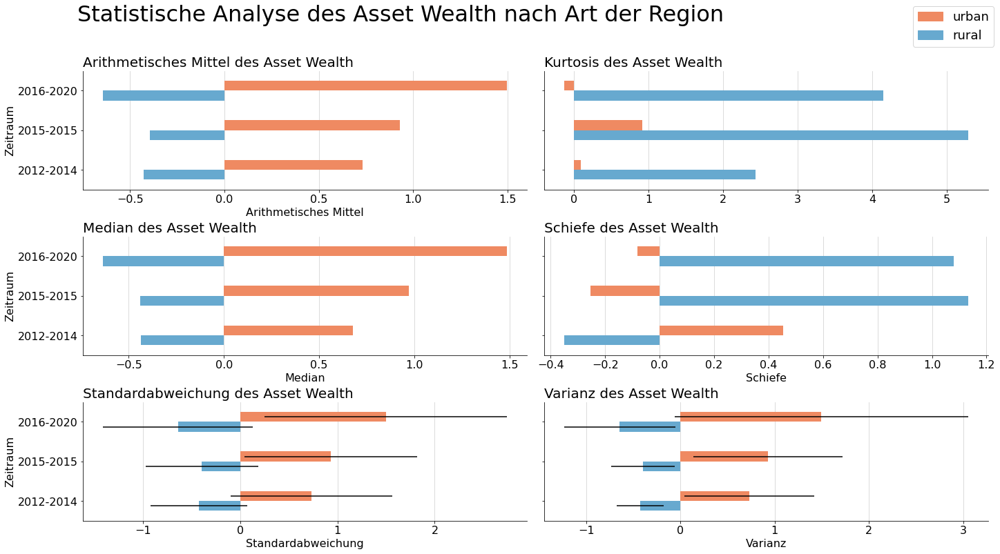
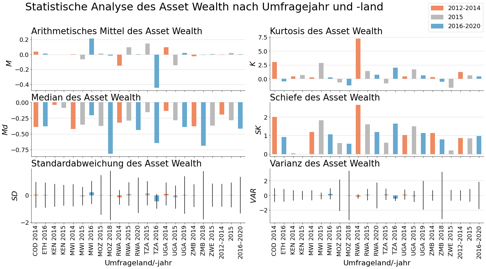

Statistical Analysis of Asset Wealth
Contents
Statistical Analysis of Asset Wealth#
[1]:
import os
import glob
import sys
sys.path.append("..")
import pandas as pd
import matplotlib.pyplot as plt
import matplotlib.patches as mpatches
from src.data_utils import get_mean
from src.data_utils import get_median
from src.data_utils import get_std
from src.data_utils import get_var
from src.data_utils import get_skew
from src.data_utils import get_kurtosis
from src.data_utils import get_ur_statistics
from src.data_utils import get_statistics
Compare urban and rural Regions over Time#
[2]:
csv_path='/mnt/datadisk/data/surveys/asset/dhs_data/label_data/'
countries = ['Malawi', 'Kenya', 'Democratic Republic of Congo', 'Rwanda', 'Zambia', 'Uganda', 'Tanzania', 'Ethiopia', 'Mozambique', 'Zimbabwe']
[3]:
statistics_ur = get_ur_statistics(csv_path=csv_path, timespan_a=range(2012,2015), countries=countries, timespan_b = range(2016,2021), timespan_c=range(2015,2016))
[4]:
statistics_ur_df = pd.DataFrame.from_dict(statistics_ur, orient='columns')
print(statistics_ur_df.shape)
statistics_ur_df.head(2)
(6, 8)
[4]:
| year | ur | mean | median | std | var | skewness | kurtosis | |
|---|---|---|---|---|---|---|---|---|
| 0 | 2012-2014 | urban | 0.732320 | 0.676740 | 0.831303 | 0.691065 | 0.453175 | 0.085632 |
| 1 | 2012-2014 | rural | -0.426892 | -0.435667 | 0.496990 | 0.246999 | -0.350300 | 2.431044 |
[6]:
mosaic = """
AB
CD
EF
"""
fig = plt.figure(constrained_layout=True)
axes = fig.subplot_mosaic(mosaic,sharey=True)
plt.rcParams["figure.figsize"]=(20,10)
for ax in [axes['A'],axes['B'],axes['C'],axes['D'],axes['E'],axes['F']]:
ax.tick_params(axis='both', which='major', labelsize=16)
ax.set_axisbelow(True)
fig.suptitle("Statistische Analyse des Asset Wealth nach Art der Region", x=.4, y=1.1, fontsize=32)
axes['A'].set_title('Arithmetisches Mittel des Asset Wealth', fontsize=20, loc='left')
means = pd.pivot_table(statistics_ur_df,values="mean",index="year",columns="ur")
means.plot(
kind='barh', ax=axes['A'], color=['#67a9cf', '#ef8a62'])
axes['A'].get_legend().remove()
axes['A'].set_yticks(statistics_ur_df.index[:3], means.index.unique())
axes['A'].set_xlabel('Arithmetisches Mittel', fontsize=16)
axes['A'].set_ylabel('Zeitraum', fontsize=16)
axes['A'].grid(axis='x',color='lightgrey')
axes['A'].spines['top'].set_visible(False)
axes['A'].spines['right'].set_visible(False)
axes['B'].set_title('Kurtosis des Asset Wealth', fontsize=20, loc='left')
pd.pivot_table(statistics_ur_df,values="kurtosis",index="year",columns="ur").plot(
kind='barh', width=.5, ax=axes['B'], color=['#67a9cf', '#ef8a62'])
axes['B'].get_legend().remove()
axes['B'].set_ylabel('Zeitraum', fontsize=16)
axes['B'].grid(axis='x',color='lightgrey')
axes['B'].spines['top'].set_visible(False)
axes['B'].spines['right'].set_visible(False)
axes['C'].set_title('Median des Asset Wealth', fontsize=20, loc='left')
pd.pivot_table(statistics_ur_df,values="median",index="year",columns="ur").plot(
kind='barh', width=.5,ax=axes['C'], color=['#67a9cf', '#ef8a62'])
axes['C'].get_legend().remove()
axes['C'].set_xlabel('Median', fontsize=16)
axes['C'].set_ylabel('Zeitraum', fontsize=16)
axes['C'].grid(axis='x',color='lightgrey')
axes['C'].spines['top'].set_visible(False)
axes['C'].spines['right'].set_visible(False)
axes['D'].set_title('Schiefe des Asset Wealth', fontsize=20, loc='left')
pd.pivot_table(statistics_ur_df,values="skewness",index="year",columns="ur").plot(
kind='barh', width=.5, ax=axes['D'], color=['#67a9cf', '#ef8a62'])
axes['D'].get_legend().remove()
axes['D'].set_xlabel('Schiefe', fontsize=16)
axes['D'].set_ylabel('Zeitraum', fontsize=16)
axes['D'].grid(axis='x',color='lightgrey')
axes['D'].spines['top'].set_visible(False)
axes['D'].spines['right'].set_visible(False)
axes['E'].set_title('Standardabweichung des Asset Wealth', fontsize=20, loc='left')
pd.pivot_table(statistics_ur_df,values=["mean",'std'],index="year",columns="ur").plot(
kind='barh', y='mean', width=.5, ax=axes['E'], xerr='std', color=['#67a9cf', '#ef8a62'])
axes['E'].get_legend().remove()
axes['E'].set_xlabel('Standardabweichung', fontsize=16)
axes['E'].set_ylabel('Zeitraum', fontsize=16)
axes['E'].grid(axis='x',color='lightgrey')
axes['E'].spines['top'].set_visible(False)
axes['E'].spines['right'].set_visible(False)
axes['F'].set_title('Varianz des Asset Wealth', fontsize=20, loc='left')
pd.pivot_table(statistics_ur_df,values=["mean",'var'],index="year",columns="ur").plot(
kind='barh', y='mean', width=.5, ax=axes['F'], xerr='var', color=['#67a9cf', '#ef8a62'])
axes['F'].get_legend().remove()
axes['F'].set_xlabel('Varianz', fontsize=16)
axes['F'].set_ylabel('Zeitraum', fontsize=16)
axes['F'].grid(axis='x',color='lightgrey')
axes['F'].spines['top'].set_visible(False)
axes['F'].spines['right'].set_visible(False)
patch_urban = mpatches.Patch(color='#ef8a62', label='urban')
patch_rural = mpatches.Patch(color='#67a9cf', label='rural')
fig.legend(handles=[patch_urban, patch_rural], fontsize=18, loc='upper right')
# plt.savefig('./asset_wealth_statistic_analysis.png', dpi=300, bbox_inches='tight', pad_inches = 0)
plt.show()

[7]:
statistics_ur_df['year'] = statistics_ur_df.year.apply(lambda x:x.replace('_','-'))
statistics_ur_df['year'] = statistics_ur_df.year.apply(lambda x: x.replace('2015-2015','2015'))
statistics_ur_df.dropna().sort_values(by=['year'])
[7]:
| year | ur | mean | median | std | var | skewness | kurtosis | |
|---|---|---|---|---|---|---|---|---|
| 0 | 2012-2014 | urban | 0.732320 | 0.676740 | 0.831303 | 0.691065 | 0.453175 | 0.085632 |
| 1 | 2012-2014 | rural | -0.426892 | -0.435667 | 0.496990 | 0.246999 | -0.350300 | 2.431044 |
| 4 | 2015 | urban | 0.929695 | 0.971463 | 0.888563 | 0.789544 | -0.252657 | 0.912855 |
| 5 | 2015 | rural | -0.394422 | -0.440112 | 0.580919 | 0.337467 | 1.132054 | 5.286251 |
| 2 | 2016-2020 | urban | 1.497189 | 1.486528 | 1.246898 | 1.554755 | -0.082131 | -0.134592 |
| 3 | 2016-2020 | rural | -0.642661 | -0.633979 | 0.768087 | 0.589958 | 1.080916 | 4.150475 |
Compare Statistics per Survey#
[8]:
statistics = get_statistics(csv_path=csv_path, timespan_a=range(2012,2015), countries=countries, timespan_b = range(2016,2021), timespan_c=range(2015,2016))
[9]:
cc_mapping = {
'CD': 'COD',
'ET': 'ETH',
'KE': 'KEN',
'MW': 'MWI',
'MZ': 'MOZ',
'RW': 'RWA',
'TZ': 'TZA',
'UG': 'UGA',
'ZM': 'ZMB',
'ZW': 'ZWE'
}
[10]:
statistics_df = pd.DataFrame.from_dict(statistics, orient='columns')
statistics_df = statistics_df.sort_values(by=['country_year']).reset_index(drop=True)
statistics_df['country_year'] = statistics_df.country_year.apply(lambda x: x.replace(x[:2], cc_mapping[x[:2]]).replace('_', ' ') if not x.startswith('kombiniert') else x.replace('kombiniert_', 'Kombiniert ').replace('_','-'))
statistics_df.loc[statistics_df.country_year=='Kombiniert 2016-2020', 'country_year'] = '2016–2020'
statistics_df.loc[statistics_df.country_year=='Kombiniert 2012-2014', 'country_year'] = '2012–2014'
statistics_df.loc[statistics_df.country_year=='Kombiniert 2015-2015', 'country_year'] = '2015'
statistics_df.dropna()
[10]:
| country_year | mean | median | std | var | skewness | kurtosis | |
|---|---|---|---|---|---|---|---|
| 0 | COD 2014 | 0.038550 | -0.390554 | 0.958625 | 0.918962 | 2.005833 | 3.031307 |
| 1 | ETH 2016 | 0.012098 | -0.381761 | 0.929815 | 0.864555 | 0.923636 | -0.466208 |
| 2 | KEN 2014 | -0.002535 | -0.040012 | 0.846506 | 0.716573 | 0.031881 | 0.459236 |
| 3 | KEN 2015 | -0.001298 | -0.087786 | 0.775691 | 0.601697 | -0.001202 | 0.677301 |
| 4 | MWI 2014 | 0.003037 | -0.421321 | 0.818947 | 0.670674 | 1.185901 | 0.248446 |
| 5 | MWI 2015 | -0.066928 | -0.355052 | 0.678299 | 0.460089 | 1.820677 | 2.835156 |
| 6 | MWI 2016 | 0.213140 | -0.204208 | 0.868516 | 0.754319 | 1.053283 | 0.232369 |
| 7 | MOZ 2015 | 0.013473 | -0.375884 | 1.469633 | 2.159821 | 0.596114 | -0.635971 |
| 8 | MOZ 2018 | -0.016615 | -0.815378 | 1.832815 | 3.359211 | 0.549163 | -1.223835 |
| 9 | RWA 2014 | -0.151484 | -0.320774 | 0.550205 | 0.302726 | 2.661513 | 7.245296 |
| 10 | RWA 2015 | 0.095847 | -0.292310 | 0.877292 | 0.769642 | 1.595143 | 1.368602 |
| 11 | RWA 2020 | 0.002184 | -0.436307 | 1.324332 | 1.753856 | 1.179800 | 0.752779 |
| 12 | TZA 2015 | 0.145819 | -0.158977 | 0.889375 | 0.790989 | 0.608331 | -0.860105 |
| 13 | TZA 2016 | -0.448258 | -0.642479 | 0.553245 | 0.306080 | 1.637034 | 1.984532 |
| 14 | UGA 2014 | 0.096341 | -0.138693 | 0.836245 | 0.699306 | 1.024133 | 0.407601 |
| 15 | UGA 2015 | -0.147538 | -0.283633 | 0.857924 | 0.736034 | 1.497002 | 1.686292 |
| 16 | UGA 2019 | 0.019539 | -0.389447 | 1.398700 | 1.956362 | 1.135502 | 0.600526 |
| 17 | ZMB 2014 | -0.023153 | -0.377790 | 0.845999 | 0.715714 | 1.141197 | 0.337275 |
| 18 | ZMB 2018 | -0.006915 | -0.685355 | 1.797500 | 3.231007 | 0.795110 | -0.548185 |
| 19 | ZWE 2015 | 0.005259 | -0.367102 | 0.860724 | 0.740845 | 0.196717 | -1.641054 |
| 20 | 2012–2014 | -0.004615 | -0.194061 | 0.848463 | 0.719890 | 0.856188 | 1.222880 |
| 21 | 2015 | 0.022697 | -0.283227 | 0.926333 | 0.858093 | 0.841734 | 0.610966 |
| 22 | 2016–2020 | 0.001080 | -0.415219 | 1.357643 | 1.843195 | 0.966412 | 0.410702 |
[11]:
c2012 = '#ef8a62'
c2015 = '#bababa'
c2016 = '#67a9cf'
colors = []
for cy in statistics_df.country_year.to_list():
if any(str(year) in cy for year in range(2012,2015)):
colors.append(c2012)
elif '2015' in cy:
colors.append(c2015)
elif any(str(year) in cy for year in range(2016,2021)):
colors.append(c2016)
[12]:
mosaic = """
AB
CD
EF
"""
fig = plt.figure(constrained_layout=True)
axes = fig.subplot_mosaic(mosaic,sharex=True)
plt.rcParams["figure.figsize"]=(20,10)
for ax in [axes['A'],axes['B'],axes['C'],axes['D'],axes['E'],axes['F']]:
ax.tick_params(axis='both', which='major', labelsize=18)
ax.set_axisbelow(True)
fig.suptitle("Statistische Analyse des Asset Wealth nach Umfragejahr und -land", x=.42, y=1.1, fontsize=32)
patch2012 = mpatches.Patch(color=c2012, label='2012-2014')
patch2015 = mpatches.Patch(color=c2015, label='2015')
patch2016 = mpatches.Patch(color=c2016, label='2016-2020')
axes['A'].set_title('Arithmetisches Mittel des Asset Wealth', fontsize=26, loc='left')
statistics_df['mean'].plot(kind='bar', ax=axes['A'], color=colors)#.set_xticks(statistics_df.index[:-1], statistics_df.country_year.iloc[:-1])
axes['A'].set_ylabel('$\it{M}$', fontsize=22)
axes['A'].grid(axis='y',color='lightgrey')
axes['A'].spines['top'].set_visible(False)
axes['A'].spines['right'].set_visible(False)
axes['B'].set_title('Kurtosis des Asset Wealth', fontsize=26, loc='left')
statistics_df['kurtosis'].plot(kind='bar', width=.5, ax=axes['B'], color=colors)
axes['B'].set_ylabel('$\it{K}$', fontsize=22)
axes['B'].grid(axis='y',color='lightgrey')
axes['B'].spines['top'].set_visible(False)
axes['B'].spines['right'].set_visible(False)
axes['C'].set_title('Median des Asset Wealth', fontsize=26, loc='left')
statistics_df['median'].plot(kind='bar', width=.5,ax=axes['C'], color=colors)#.set_xticks(statistics_df.index[:-1], statistics_df.country_year.iloc[:-1])
axes['C'].set_xticks(statistics_df.index, statistics_df.country_year, fontsize=18)
axes['C'].set_ylabel('$\it{Md}$', fontsize=22)
axes['C'].set_xlabel('Umfrageland/-jahr', fontsize=22)
axes['C'].grid(axis='y',color='lightgrey')
axes['C'].spines['top'].set_visible(False)
axes['C'].spines['right'].set_visible(False)
axes['D'].set_title('Schiefe des Asset Wealth', fontsize=26, loc='left')
statistics_df['skewness'].plot(kind='bar', width=.5, ax=axes['D'], color=colors)
axes['D'].set_xticks(statistics_df.index, statistics_df.country_year, fontsize=18)
axes['D'].set_ylabel('$\it{SK}$', fontsize=22)
axes['D'].set_xlabel('Umfrageland/-jahr', fontsize=22)
axes['D'].grid(axis='y',color='lightgrey')
axes['D'].spines['top'].set_visible(False)
axes['D'].spines['right'].set_visible(False)
axes['E'].set_title('Standardabweichung des Asset Wealth', fontsize=26, loc='left')
statistics_df.plot(kind='bar', y='mean', width=.5, ax=axes['E'], yerr='std', color=colors)
axes['E'].set_xticks(statistics_df.index, statistics_df.country_year, fontsize=18)
axes['E'].set_ylabel('$\it{SD}$', fontsize=22)
axes['E'].set_xlabel('Umfrageland/-jahr', fontsize=22)
axes['E'].grid(axis='y',color='lightgrey')
axes['E'].spines['top'].set_visible(False)
axes['E'].spines['right'].set_visible(False)
axes['E'].get_legend().remove()
axes['F'].set_title('Varianz des Asset Wealth', fontsize=26, loc='left')
statistics_df.plot(kind='bar', y='mean', width=.5, ax=axes['F'], yerr='var', color=colors)
axes['F'].get_legend().remove()
axes['F'].set_xticks((statistics_df.index), statistics_df.country_year, fontsize=18)
axes['F'].set_ylabel('$\it{VAR}$', fontsize=22)
axes['F'].set_xlabel('Umfrageland/-jahr', fontsize=22)
axes['F'].grid(axis='y',color='lightgrey')
axes['F'].spines['top'].set_visible(False)
axes['F'].spines['right'].set_visible(False)
fig.legend(handles=[patch2012, patch2015, patch2016], fontsize=18, loc='upper right')
# plt.savefig('./asset_wealth_statistic_analysis.png', dpi=300, bbox_inches='tight', pad_inches = 0)
plt.show()

[13]:
statistics_df[['country_year', 'mean', 'median', 'std', 'var', 'skewness', 'kurtosis']]
[13]:
| country_year | mean | median | std | var | skewness | kurtosis | |
|---|---|---|---|---|---|---|---|
| 0 | COD 2014 | 0.038550 | -0.390554 | 0.958625 | 0.918962 | 2.005833 | 3.031307 |
| 1 | ETH 2016 | 0.012098 | -0.381761 | 0.929815 | 0.864555 | 0.923636 | -0.466208 |
| 2 | KEN 2014 | -0.002535 | -0.040012 | 0.846506 | 0.716573 | 0.031881 | 0.459236 |
| 3 | KEN 2015 | -0.001298 | -0.087786 | 0.775691 | 0.601697 | -0.001202 | 0.677301 |
| 4 | MWI 2014 | 0.003037 | -0.421321 | 0.818947 | 0.670674 | 1.185901 | 0.248446 |
| 5 | MWI 2015 | -0.066928 | -0.355052 | 0.678299 | 0.460089 | 1.820677 | 2.835156 |
| 6 | MWI 2016 | 0.213140 | -0.204208 | 0.868516 | 0.754319 | 1.053283 | 0.232369 |
| 7 | MOZ 2015 | 0.013473 | -0.375884 | 1.469633 | 2.159821 | 0.596114 | -0.635971 |
| 8 | MOZ 2018 | -0.016615 | -0.815378 | 1.832815 | 3.359211 | 0.549163 | -1.223835 |
| 9 | RWA 2014 | -0.151484 | -0.320774 | 0.550205 | 0.302726 | 2.661513 | 7.245296 |
| 10 | RWA 2015 | 0.095847 | -0.292310 | 0.877292 | 0.769642 | 1.595143 | 1.368602 |
| 11 | RWA 2020 | 0.002184 | -0.436307 | 1.324332 | 1.753856 | 1.179800 | 0.752779 |
| 12 | TZA 2015 | 0.145819 | -0.158977 | 0.889375 | 0.790989 | 0.608331 | -0.860105 |
| 13 | TZA 2016 | -0.448258 | -0.642479 | 0.553245 | 0.306080 | 1.637034 | 1.984532 |
| 14 | UGA 2014 | 0.096341 | -0.138693 | 0.836245 | 0.699306 | 1.024133 | 0.407601 |
| 15 | UGA 2015 | -0.147538 | -0.283633 | 0.857924 | 0.736034 | 1.497002 | 1.686292 |
| 16 | UGA 2019 | 0.019539 | -0.389447 | 1.398700 | 1.956362 | 1.135502 | 0.600526 |
| 17 | ZMB 2014 | -0.023153 | -0.377790 | 0.845999 | 0.715714 | 1.141197 | 0.337275 |
| 18 | ZMB 2018 | -0.006915 | -0.685355 | 1.797500 | 3.231007 | 0.795110 | -0.548185 |
| 19 | ZWE 2015 | 0.005259 | -0.367102 | 0.860724 | 0.740845 | 0.196717 | -1.641054 |
| 20 | 2012–2014 | -0.004615 | -0.194061 | 0.848463 | 0.719890 | 0.856188 | 1.222880 |
| 21 | 2015 | 0.022697 | -0.283227 | 0.926333 | 0.858093 | 0.841734 | 0.610966 |
| 22 | 2016–2020 | 0.001080 | -0.415219 | 1.357643 | 1.843195 | 0.966412 | 0.410702 |